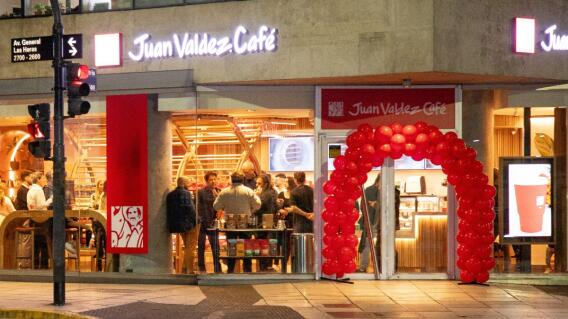
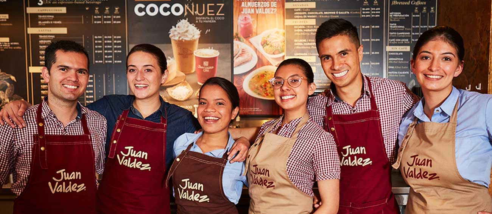

Bienvenido

Bienvenido a Café Juan Valdez, tu rincón favorito para disfrutar de un buen café al mejor estilo colombiano.
Aquí cada taza cuenta una historia, desde los cafetales de nuestras montañas hasta tu mesa.
Nuestro espacio está diseñado para que te sientas como en casa: música suave, decoración cálida y aromas que despiertan los sentidos.
Ven y vive la experiencia del auténtico café, acompañado de postres caseros y una atención que te hará querer volver siempre.
Nosotros

En Café Juan Valdez creemos en el poder del café para unir personas, crear momentos y contar historias.
Somos una cafetería local apasionada por la tradición cafetera de Colombia, ofreciendo siempre calidad, sabor y hospitalidad.
Nuestro equipo está conformado por amantes del café, baristas expertos y personal comprometido en brindarte la mejor experiencia.
Valoramos la sostenibilidad, apoyamos a pequeños productores y trabajamos día a día para preservar la cultura cafetera que nos representa.
Cultura
En Café Juan Valdez, la cultura no se limita al sabor del café, sino también a la forma en la que lo creamos y compartimos.
Cada taza representa el esfuerzo, la pasión y la dedicación de nuestros caficultores, quienes con creatividad e innovación
mantienen viva la tradición cafetera de Colombia.
Nuestra cultura de creación busca inspirar momentos únicos: desde recetas originales que combinan lo clásico con lo moderno,
hasta espacios diseñados para fomentar la conversación, el arte y la conexión entre las personas.
Creemos que el café es más que una bebida, es una expresión cultural.
Por eso apoyamos la creatividad en todas sus formas: arte, música, literatura y experiencias que nacen en nuestras tiendas y que trascienden más allá de la taza.
Aquí, cada detalle refleja un compromiso con la innovación y con el valor de crear juntos.
https://www.youtube.com/@juanvaldezcafeco
Galería
Descubre el ambiente único de Café Juan Valdez: un lugar donde cada detalle está pensado para tu comodidad.
Desde los muebles rústicos hasta la decoración moderna, todo refleja la calidez de la cultura cafetera.
Nuestra galería muestra rincones acogedores, espacios para compartir y áreas ideales para leer, trabajar o simplemente disfrutar de un café en paz.
Queremos que cada visita sea una experiencia sensorial completa, no solo un momento para tomar café.
Contacto
×
✅ Correo enviado
Tu mensaje ha sido enviado con éxito. ¡Gracias por contactarnos!
.jpg)